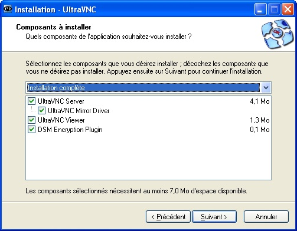
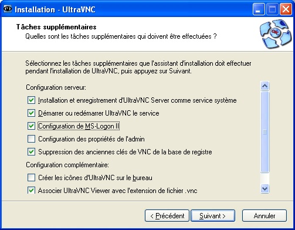
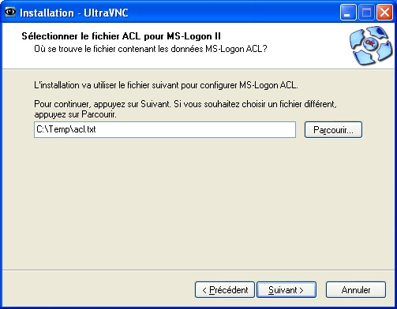
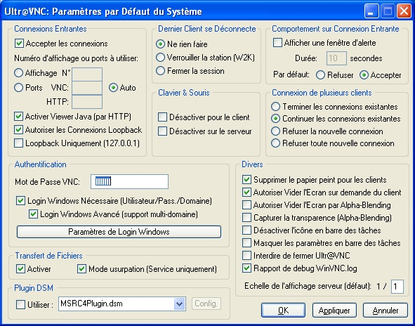
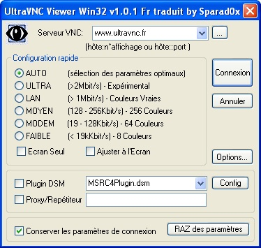

Salut a tous,
Votre PC est dans la cabine de régie et vous voulez le contrôler à distance afin de pouvoir rester à proximité du metteur en scène ou vous voulez pouvoir le dépanner sur internet car votre assistant l'a planté en installant World of worldcraft pendant vos vacances aux Bermudes ? Le vnc est fait pour vous, il va vous permettre d'affiché l'écran et de contrôler le clavier et la souris d'un ordinateur cible sur un ordinateur télécommande.
Télécharger l'application ultra vnc et installer là sur les deux ordinateur :
le serveur que vous contrôlerez et le client qui servira de télécommande. Téléchargeable à l'adresse www.ultravnc.fr/
Lors de l'installation cocher les case suivante:



Vous pouvez aussi installer le serveur seul et le client seul. Il s'agira alors de deux fichier .exe ne nécessitant pas d'installation.
Lorsque vous lancer le serveur sur l'ordinateur que vous voulez télécommander, cette fenêtre s'affiche.

Par mesure de sécurité, il est conseillé de changer le numéro de port et ne pas le laisser en auto. Par défaut, le port vnc est 5900, indiquer un numéro de port supérieur à 1080 par exemple 5943 et ouvrez ce port dans votre part feu.
Si vous n'avez pas installé ultra vnc sans l'installeur, désactivez les case login windows nécessaire et login windows avancé, vous risqueriez d'avoir des problèmes d'installation. Choisissez un mot de passe vnc (chiffre et lettre, petite complexité).
Le mode usurpation permet si il est enclenché de limiter les accès aux fichiers. Si ce mode est activé, un utilisateur qui se connecte via UltraVNC et qui arrive sur l'écran de login/password de Windows ne peut pas utiliser le transfert de fichiers. Une fois loggué, il ne peut accèder qu'aux répertoires et fichiers auxquels lui donne droit son profil utilisateur Windows. Si ce mode est désactivé, les utilisateurs UltraVNC ont un accès total aux fichiers du serveur, même sans être loggués sous Windows.
Cochez affiché une fenêtre d'alerte et refuser. Cela permettra de bloquer toute nouvelle connexion qui n'aura pas été autoriser sur le serveur.
Il est conseillé aussi d'utiliser un plug-in DSM de cryptage téléchargeable à l'adresse suivante : http://msrc4plugin.home.comcast.net/~msrc4plugin/aesv2plugin.html.
Sur le machine qui sert de télécommande lancer ultravncviewer et ouvrez sur votre part feu le port (dans notre exemple) 5943.

Vous devez avoir entre les deux machine une connexion ad-hoc ou être sur le même réseaux local. Dans serveur vnc entrer l'IP de la machine serveur suivit du numéro de port vnc (ex : 192.168.1.23::5943), puis cliquer sur connexion. Après vous avoir demandé votre mot de passe, une fenêtre s'ouvre ou vous pouvez voir l'écran de la machine serveur et le contrôler. Vous pourrez aussi ouvrir une fenêtre de chat vous permettant de communiquer avec l'ordinateur que vous chercher à dépanner.
La différence entre une IP fixe et une IP dynamique dépend de votre fournisseur d'accès à internet. Si vous avez une IP fixe (ex: free) pas de problème, il vous suffira de vous souvenir de votre IP. Si vous avez une IP dynamique cela est un peu plus compliqué car votre adresse Ip change continuellement.
Dans le cas d'une IP dynamique, rendez vous sur le site http://www.no-ip.com et créer un nouveau compte (gratuit) avec un nom de domaine (ex:moianton.no-ip.org) puis installer sur votre ordinateur le dynamique dns update client téléchargeable à l'adresse http://www.no-ip.com/downloads.php Dorénavant lorsque votre client est lancé et l'ordinateur connecter à internet, il mettra mon adresse IP à jour pour que celle-ci corresponde à moianton.no-ip.org
Dans les deux cas , IP fixe ou dynamique, vous devrez configurez votre routeur pour qu'il redirige le port 5943 (dans notre exemple) vers votre machine. Pour cela ouvrez votre navigateur et entrez l'adresse de votre routeur (ex: http://192.168.1.1). L'adresse du routeur peut se trouvez dans votre connexion réseau/statut/passerelle par défaut.
Une fenêtre s'ouvrira vous demandant votre login ainsi que votre mot de passe du routeur. Lorsque c'est information son rentrée vous accéderez à la page de configuration du routeur.
Cherchez dans cette page un fonction qui s'appelle port forwarding. Entrez un nom de service (ex: vnc) sélectionnez TCP, entrez comme numéro de port d'entré 5943 et 5943 en port de sortie, puis entrez l'adresse IP de l'ordinateur serveur vnc à contrôler (ex: 192.168.1.12). Le port 5943 de l'accès internet au routeur est dirigé vers le port 1943 de la machine 192.168.1.12
Vous pouvez à présent depuis internet avec ultravncwiever vous connecter en entrant dans serveur vnc : moianton.no-ip.org::5943 et cliquer sur connexion. Vérifier bien sur que le port 5943 est ouvert dans tout les part feu (deux ordinateurs, routeur), et que sur le serveur ultravnc et le dynamique dns update client sont bien lancé.